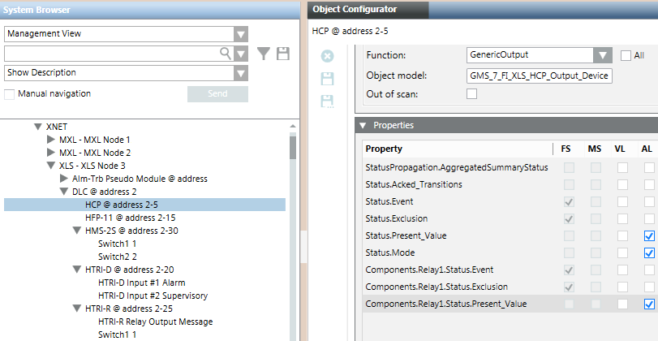

XNET Fire Components States in System Reactions
XNET device objects –beside the general device properties such as PresentValue, Mode, and so on– also include the properties of internal components, providing information about individual switch inputs and relay outputs of the device.
In the Values and States expander of reaction Triggers, you can use XNET device objects and select one of their component properties, for example the property:
Switch1 [Component.Switch1.Status.Present_Value]
The components of a device in an XNET network are usually listed in the Properties expander of the Object Configurator tab and the component status is visible in the Operation pane when selecting the device in the System Browser. In this case, consider the following:
- The description text of the component is not customizable.
- The valid value range of the properties of the component includes values with an offset of 512, for properties with MODE set to ON (used for reactions and macros).
HMS and HTRI devices are managed differently. In this case, components are displayed as single nodes in the System Browser tree. For these components, note the following:
- The description text of the component is customizable.
- The valid value range of the properties of the component does not include values with an offset of 512.
